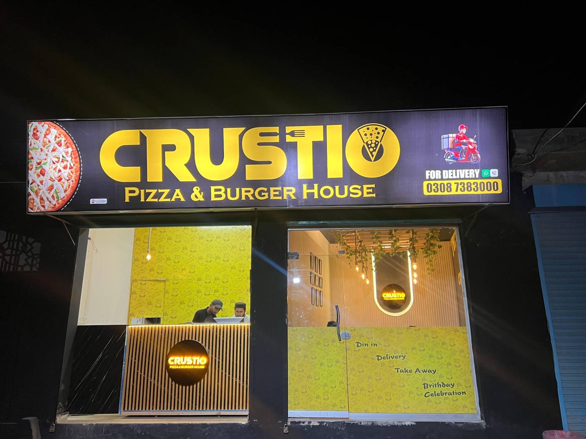

Built for cravings
The story, vision and growth of a Multan pizza and burger house.
Pizza with a crown, burgers with a crunch
CRUSTIO started as a neighbourhood pizza and burger counter in Multan. The idea was simple: serve food people crave, in a room they enjoy sitting in.
Today the menu covers fifteen pizza flavours, six burgers, pasta, sandwiches, wings and loaded fries, with deals for one person up to a whole birthday party. Guests can dine in, take away or order delivery from either branch.
The next chapter is growth beyond the first two branches, through franchise partners who share the same standard.

Crave it. Taste it. Love it.
Crave it
Bold flavours from tikka, fajita, peri peri, shahi and BBQ, so every order has something to look forward to.
Taste it
Crispy chicken, melted cheese and generous toppings, built to taste the same at every branch.
Love it
A place for friends, family and birthdays, with seats for the whole group.
The pizza and burger house people talk about
To become a trusted fast-food name across Pakistan, known for flavour, consistency and a welcoming table.
Serve food worth coming back for
To serve crave-worthy pizzas and burgers at fair prices, in clean, comfortable branches with friendly service.